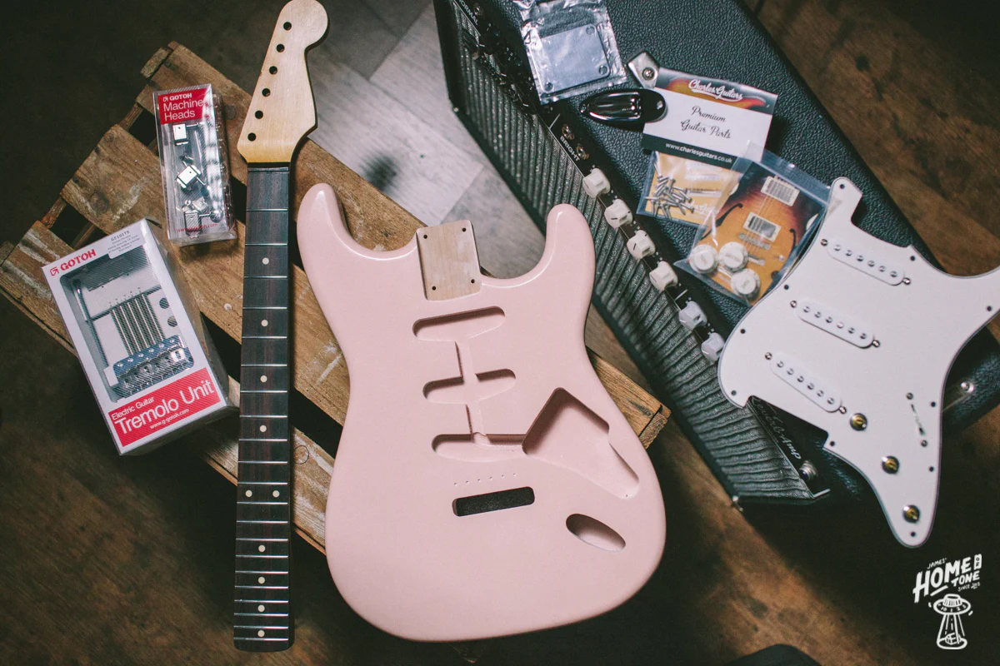
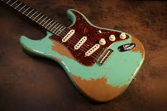

About Relic Fender Guitars
Fender Stratocasters from the 1950s–1970s are some of the most iconic guitars ever made. Relic guitars replicate the worn, aged look and feel of these vintage instruments. To some, this guitar may look beat up and unwanted. However guitarists will look at this and think, wow, that is beautiful. Many people scrape paint off of their guitars in vintage looking ways on purpose to improve the guitar's aesthetic.
Here is a relic stratocaster

How to Build a Custom Stratocaster
- Choose Your Body
- Alder (classic tone)
- Ash (brighter sound)
- Relic finish vs new finish
- Select a Neck
- Maple neck
- Rosewood fretboard
- Modern vs vintage profile
- Install Hardware
- Pickups (single-coil)
- Bridge (vintage tremolo)
- Tuners
- Final Setup
Custom Build Example

Watch a Stratocaster Build - From Scratch
I hope to someday have a relic guitar as cool as this one.
